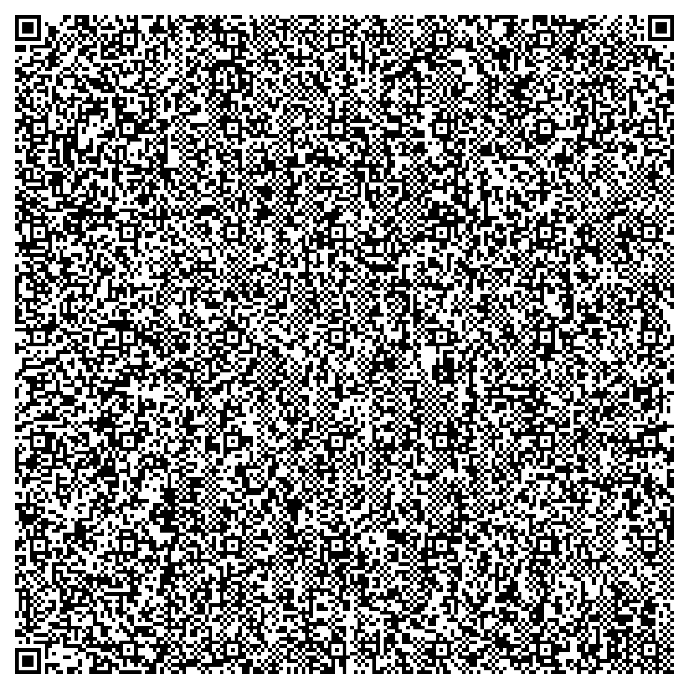

This single QR code holds a 2,850-byte movie. No server, no internet —
your browser decodes the bytes in the QR and plays the film. The QR is the video.
decoding the QR…

↤ this exact QR. Scan it with the player on any phone and the same film plays — offline.